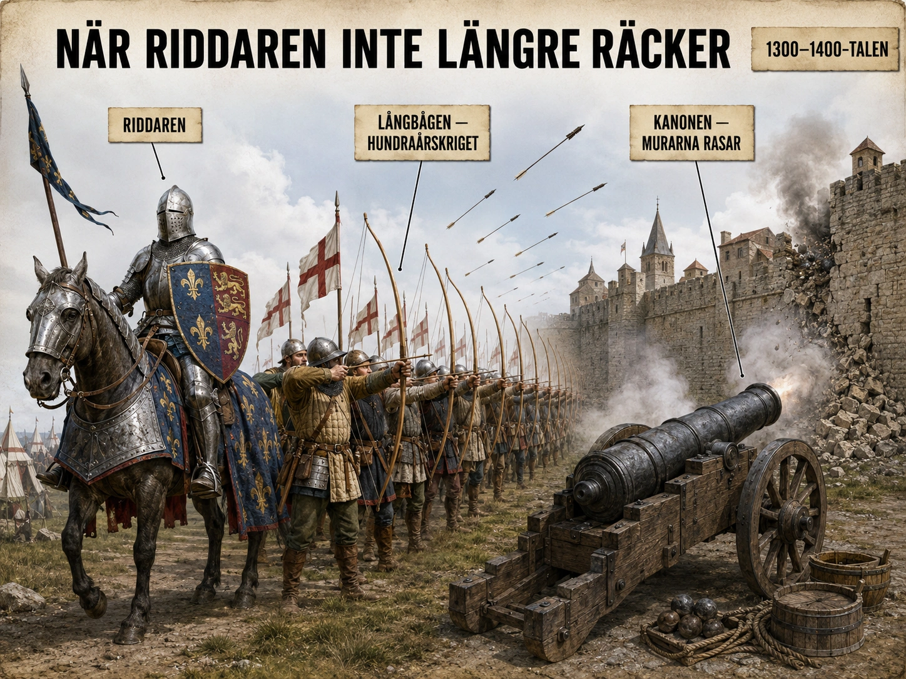
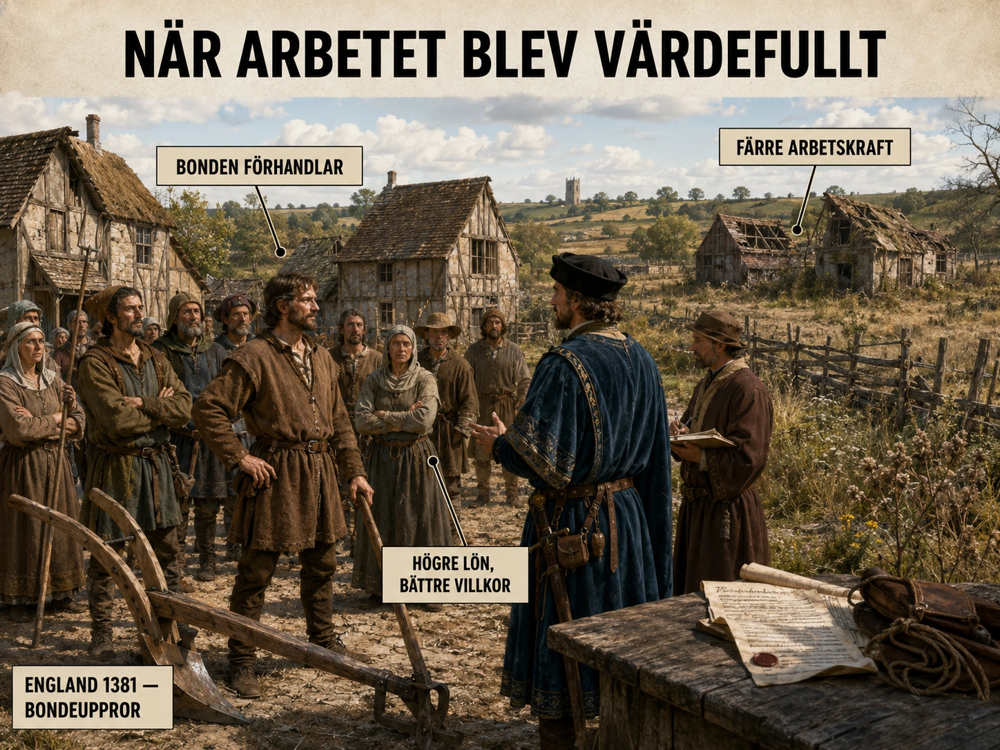
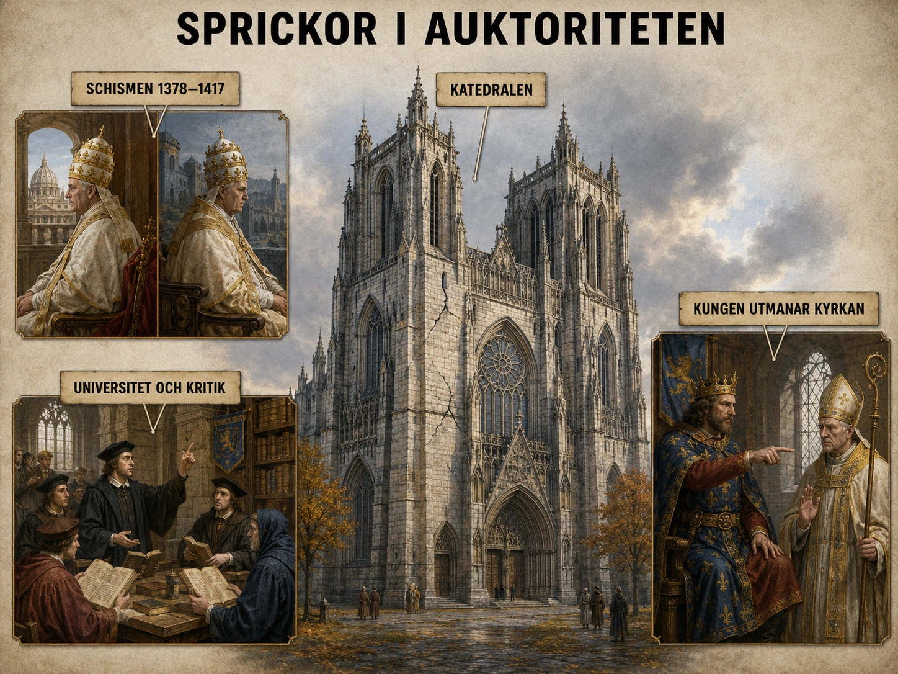

Under stora delar av medeltiden var riddaren Europas mäktigaste symbol på krig. Han var inte bara soldat. Han var också adelsman, jordägare och en del av feodalsystemet. Kungen gav adeln jord och privilegier, och i utbyte var adeln skyldig att kriga åt honom.
Riddaren var fruktad
Riddaren var fruktad eftersom han kombinerade flera saker: häst, rustning, lans, svärd och militär träning. En grupp riddare som anföll tillsammans kunde slå sönder enklare bondesoldater. Han var dyr att utrusta och svår att besegra.

Men allt förändrades
Under senmedeltiden började detta ändras. Riddaren försvann inte över en natt, men han blev inte längre självklart överlägsen. Anledningen var att nya vapen och nya sätt att kriga gjorde att även fotsoldater kunde stoppa riddare.
Långbågen användes särskilt av engelska bågskyttar under hundraårskriget mellan England och Frankrike. En vältränad bågskytt kunde skjuta snabbt och på långt avstånd. När många bågskyttar sköt samtidigt blev det ett regn av pilar. Riddare kunde stoppas innan de ens nådde fram.
Piken var ett mycket långt spjut. När fotsoldater stod tätt tillsammans med pikar framför sig blev de en vägg av spetsar. En häst vill inte gärna springa rakt in i en sådan vägg.
Krut och kanoner förändrade kriget på djupet. Borgar och stadsmurar som tidigare hade varit nästan oövervinneliga kunde nu skjutas sönder.
Den stående armén
Detta förändrade arméerna. Krig handlade mindre om att kungen kallade in sina vasaller och mer om att han måste anställa, träna och betala soldater. Det är här tanken på en stående armé växer fram — en armé som finns kvar även när det inte är akut krig, anställd och tränad och lojal mot staten.
Riddaren blev inte värdelös. Men hans gamla militära monopol bröts. Krig började bli något större: ett projekt för staten.
Under stora delar av medeltiden var riddaren en av Europas mäktigaste symboler. En riddare var inte bara en soldat. Han var också adelsman, jordägare och en del av det feodala systemet. Kungen gav jord och privilegier till adeln. I gengäld skulle adeln ställa upp med beväpnade män när kungen behövde kriga. Den viktigaste krigaren var länge den bepansrade riddaren till häst.
Riddaren var fruktad eftersom han kombinerade flera saker: häst, rustning, lans, svärd och militär träning. En grupp riddare som anföll tillsammans kunde slå sönder enklare bondesoldater. På slagfältet såg riddaren ut som själva bilden av makt. Han var dyr att utrusta, svår att besegra och hade hög status.
Men under senmedeltiden började detta förändras. Riddaren försvann inte över en natt, men han blev inte längre lika självklart överlägsen. Orsaken var att nya vapen och nya sätt att kriga gjorde att även fotsoldater kunde stoppa riddare.
Långbågen
Ett viktigt vapen var långbågen. Den användes särskilt av engelska bågskyttar under hundraårskriget mellan England och Frankrike. En vältränad bågskytt kunde skjuta snabbt och på långt avstånd. Om många bågskyttar sköt samtidigt kunde de skapa ett regn av pilar mot fienden. Det betydde att riddare kunde stoppas innan de ens nådde fram till närstrid. Hundraårskriget bestod av många belägringar, räder och slag, och under kriget blev nya militära metoder allt viktigare.
Piken
Ett annat viktigt vapen var piken, alltså ett mycket långt spjut. När fotsoldater stod tätt tillsammans med pikar framför sig blev de som en vägg av spetsar. En häst vill inte gärna springa rakt in i en sådan vägg. Därför kunde välorganiserade fotsoldater försvara sig mot kavalleri. Det viktiga var inte bara vapnet, utan också formationen. Soldaterna måste stå tätt, hålla ordning och lita på varandra.
Krutvapnen
Sedan kom krutvapnen. De första kanonerna var långsamma, klumpiga och svåra att använda. Men de förändrade ändå kriget på djupet. Kanoner kunde användas för att skjuta sönder murar. Tidigare hade borgar och stadsmurar varit mycket viktiga försvar. En adelsman som hade en stark borg kunde kontrollera ett område. Men när kanonerna blev bättre blev gamla borgar mer sårbara. Under hundraårskriget började äldre belägringsmaskiner gradvis ersättas av artilleri, alltså kanoner och andra skjutvapen.
Den stående armén växer fram
Detta förändrade arméerna. Krig handlade mindre om att en kung kallade in sina vasaller under en begränsad tid. I stället behövde kungar soldater som kunde tränas, betalas och användas under längre perioder. Det kunde vara bågskyttar, pikenerare, kanonskyttar, ingenjörer, hantverkare, kuskar och personer som skötte mat, hästar och utrustning.
Det är här tanken på den stående armén växer fram. En stående armé är en armé som finns kvar även när det inte är akut krig. Den är anställd, tränad och mer direkt lojal mot staten eller kungen. Under senmedeltiden är detta ännu inte fullt utvecklat överallt. Men riktningen är tydlig: framtidens krig kommer att kräva pengar, organisation, skatter och central ledning.
Det viktiga är alltså inte att riddaren plötsligt blev värdelös. Riddare och adelsmän fortsatte att kriga länge. Men deras gamla militära monopol bröts. En ensam adelsman med rustning och häst var inte längre det självklara svaret på alla militära problem. Krig började bli något större: ett projekt för staten.
En bild av makt som börjar krackelera
Tänk dig en målning från 1200-talet. I förgrunden står en riddare i full rustning, lans i hand, häst med vapenkåpa, vapensköld med ärftliga symboler. Bakom honom syns hans borg. Vid hans sida finns hans följe av väpnare och soldater. Den bilden är inte bara konst — den är en politisk självbild. Riddaren var medeltidens militära ideal, och hela samhället var organiserat runt antagandet att han var oslagbar.
Hundra år senare börjar samma bild se annorlunda ut. Riddaren är fortfarande där, men i bakgrunden står saker som inte borde vara där: bågskyttar, pikenerare, en kanonpipa. Och något har förändrats i hans hållning. Han ser inte längre lika säker ut.
Detta är senmedeltidens militära revolution — och den är inte en explosion utan en långsam erosion.
Crécy 1346 — chocken
Det första riktigt synliga tecknet kom vid slaget vid Crécy den 26 augusti 1346. Engelska kung Edvard III hade ungefär 12 000 man, varav merparten var bondesoldater och bågskyttar. Franska kung Filip VI hade kanske 30 000 — och en stor del var rustad adel till häst. Det borde ha varit en lätt fransk seger.
Men engelska bågskyttar med långbåge sköt mellan 10 och 20 pilar per minut. Tusentals bågskyttar samtidigt skapade ett regn av pilar som föll i parabolisk båge ner över de framryckande franska riddarna. Pilarna kunde inte alltid genomtränga den tjockaste rustningen, men de träffade hästarna, oskyddade öppningar, ögonglas. Riddare fälldes innan de ens nådde fram till engelsmännen. Vid dagens slut hade kanske 1 500 franska riddare och adelsmän stupat. Engelska förluster: några hundra.
Sedan upprepades samma mönster — vid Poitiers 1356, vid Agincourt 1415. Tre gånger blev hela den franska riddaradeln decimerad av bondebågskyttar. Det var inte en slump. Det var en strukturell förändring.
Det som krävdes — träning, organisation, pengar
Långbågen kunde inte plockas upp av vem som helst. En engelsk bågskytt började träna som pojke och drog en båge med 70 till 100 kilos dragkraft. Skelett av engelska bågskyttar visar deformerade ryggrader och axelben från livslång träning. Det var ett yrke — och det krävde tid och pengar att utbilda.
Schweiziska pikenerare blev en annan typ av professionella soldater. Småjordbrukare från bergsbyarna lärde sig kämpa i tät formation, och deras pikfalanger blev så effektiva att de blev en eftertraktad legoarmé över hela Europa. Det schweiziska gardet vid Vatikanen är än idag ett kvarvarande spår av detta.
Detta kostade pengar. En adelsman kunde fortfarande utrusta sig själv. Men en armé av professionella bågskyttar, pikenerare och kanonskyttar krävde statskassa, inte personlig egendom. Och statskassa krävde i sin tur skatter, administration, dokumentation. Krig hade blivit en byråkratisk verksamhet.
Konstantinopel 1453 — en symbolisk vändpunkt
Den mest dramatiska bekräftelsen av kanonens makt kom vid Konstantinopels fall den 29 maj 1453. Stadens berömda dubbla murar hade hållit i tusen år — sedan kejsar Theodosius dagar. Mot vanliga belägringsvapen var de praktiskt taget ointagliga.
Men den unge ottomanske sultanen Mehmet II hade investerat i något nytt. Han hade anlitat en ungersk kanongjutare vid namn Orban och låtit bygga gigantiska bronskanoner, vissa så stora att tre oxar krävdes för att flytta varje kanonkula. Under sex veckor sköt dessa kanoner mot Konstantinopels murar. Och murarna föll.
Detta var bokstavligen medeltidens slut för många historiker. Det östromerska rikets sista huvudstad, kristendomens österländska centrum, hade fallit — och det hade fallit för en teknologi som femtio år tidigare ingen hade tagit på riktigt allvar.
Italien — krigets professionalisering
I Italien tog samma utveckling en annan form. De norditalienska stadsstaterna — Florens, Venedig, Milano, Genua — hade inte traditionella feodalarmeer att räkna med. Istället utvecklade de condottieri-systemet: yrkesofficerare som mot betalning ledde legoarméer för städernas räkning. En condottiere kunde tjäna en stad ena året och en rival nästa. Krig blev en bransch.
Det märkligaste är hur litet av detta krig kostade i människoliv. Eftersom condottiererna var betalda för seger, inte för slakt, undvek de oftast onödiga blodsutgjutelser. Två arméer kunde manövrera mot varandra i veckor och avgöra konflikten med ett enda begränsat slag — eller med att ena sidan retirerade när den såg sig övermannad. Det är inte alltid riktigt så ren bild som historikerna en gång framställde, men kontrasten med riddartidens stora slag är slående.
Den långsamma övergången
Det är viktigt att förstå att övergången från feodalarmé till stående armé tog århundraden. Engelska kungar fortsatte kalla in feodala uppbåd långt in på 1500-talet. Riddare stred och stupade vid Crécy, Agincourt och vid europeiska slagfält ända in i tidigmodern tid.
Det som förändrades var inte att riddaren försvann. Det som förändrades var att han inte längre var avgörande. Bredvid honom stod nu bågskytten, pikeneraren, kanonskytten, ingenjören som byggde befästningar. Krig hade blivit ett system — och i ett system är ingen enskild krigare oumbärlig.
Den bilden från 1200-talet — den ensamme riddaren på sin häst — var inte längre sann. I 1450-talets bild står han inte ensam. Han står omgiven av människor som tjänar staten, betalda i mynt, lojala mot en organisation. Det är inte längre hans krig. Det är kungens.
Under feodalismen var kungens makt ofta begränsad. En kung kunde ha krona och tron, men han var ändå beroende av adeln. Om kungen ville föra krig behövde han kalla in sina vasaller — adelsmännen som var skyldiga att hjälpa honom militärt.
![En symbolisk bild som visar maktförskjutningen från adel till kung. Centralt en medeltida kung på sin tron i en kungssal omgiven av skrivare med pergamentrullar, en skattkista med mynt, och en domare med vågskål. Bakom kungen en stor flagga eller vapen. I bakgrunden mindre och åt sidan en adelsman vid en mindre borg som ser bekymrad eller dämpad ut, borgen intakt men på avstånd från det kungliga centrumet. Etiketter pekar ut kungen och hans förvaltning, skatter och ämbetsmän, adeln på sin borg, och att makten flyttas.](img/styrke-kung-adel.webp)
Adeln var mäktig
Det gjorde adeln mycket mäktig. De hade borgar, riddare, egna soldater och kontroll över stora landområden. På många platser i Europa var kungen inte ensam härskare i praktiken. Han var snarare den mäktigaste i ett nätverk av andra mäktiga personer.
Maktbalansen förändras
Under senmedeltiden förändrades maktbalansen. En orsak var den militära förändringen. När riddare inte längre var den enda viktiga militära kraften minskade adelns gamla fördel. Om kungen kunde anställa bågskyttar, fotsoldater och kanonskyttar blev han mindre beroende av adelsmännen.
Detta krävde pengar. Och här kommer pengahushållningen in. Tidigare hade mycket av ekonomin byggt på att man betalade med arbete eller varor. Men när handeln växte och städerna blev viktigare kunde kungar börja ta in skatter i pengar. Pengar kunde sedan användas för att betala soldater, köpa vapen, anställa skrivare och bygga upp en administration.
Makten flyttas
Detta är en av de viktigaste förändringarna i Europas historia: makten flyttades från personliga band till statlig organisation.
I feodalismen byggde makt på frågan: vem är lojal mot vem?
Under den nya kungamakten började makt mer handla om frågan: vem kan ta in skatt, betala soldater och styra ett rike med lagar och ämbetsmän?
Adeln förlorade inte allt
Adeln förlorade inte all makt. Många adelsmän fortsatte vara rika och inflytelserika. Men deras roll förändrades. I stället för att vara nästan självständiga krigsherrar kunde de bli en del av kungens hov, kungens armé eller kungens förvaltning. De kunde få höga ämbeten, men då var deras makt mer beroende av kungen.
Kanonerna påverkade också detta. En adelsman med en stark borg kunde tidigare trotsa kungen. Men om kungen hade artilleri kunde han belägra och skjuta sönder borgar.
Under feodalismen var kungens makt ofta begränsad. En kung kunde ha en fin titel, en krona och en tron, men han kunde ändå vara beroende av adeln. Om kungen ville föra krig behövde han ofta kalla in sina vasaller. Vasallerna var adelsmän som hade fått jord eller privilegier och som därför var skyldiga att hjälpa kungen militärt.
Det gjorde adeln mycket mäktig. De hade borgar, riddare, egna soldater och kontroll över stora landområden. På många platser i Europa var kungen inte ensam härskare i praktiken. Han var snarare den mäktigaste personen i ett nätverk av andra mäktiga personer.
Men under senmedeltiden förändrades maktbalansen. En viktig orsak var den militära förändringen. När riddare inte längre var den enda viktiga militära kraften minskade adelns gamla fördel. Om kungen kunde anställa bågskyttar, fotsoldater, kanonskyttar och legosoldater blev han mindre beroende av adelsmännen.
Pengahushållningens roll
Detta hade varit omöjligt utan pengar. Därför hänger militär förändring ihop med pengahushållning. Tidigare hade mycket av ekonomin byggt på naturahushållning: man betalade med arbete, jordbruksprodukter eller tjänster. Men när handeln växte, städerna blev viktigare och mynt användes mer, kunde kungar börja ta in skatter i pengar. Pengar kunde sedan användas för att betala soldater, köpa vapen, anställa skrivare och bygga upp en administration.
Från personliga band till statlig organisation
Det här är en av de viktigaste förändringarna i Europas historia: makt flyttas från personliga band till statlig organisation.
I feodalismen byggde makt ofta på frågan: Vem är lojal mot vem?
I den starkare kungamakten började makt mer handla om frågan: Vem kan ta in skatt, betala soldater och styra ett rike med lagar och ämbetsmän?
När kungar fick bättre inkomster kunde de bygga upp en mer centraliserad makt. De kunde anställa skrivare som förde register, domare som dömde i kungens namn och fogdar som samlade in skatter. Det gjorde att kungen kunde nå längre ut i landet än tidigare.
Adelns nya roll
Adeln förlorade inte all makt. Många adelsmän fortsatte vara rika och inflytelserika. Men deras roll förändrades. I stället för att vara nästan självständiga krigsherrar kunde de bli en del av kungens hov, kungens armé eller kungens förvaltning. De kunde få höga ämbeten, men då var deras makt mer beroende av kungen.
Kanonerna påverkade också makten. En adelsman med en stark borg kunde tidigare trotsa kungen. Men om kungen hade artilleri kunde han belägra och skjuta sönder borgar. Det betydde att adelns privata militära makt blev svårare att försvara.
Olika utveckling i olika länder
Detta skedde olika snabbt i olika länder. I vissa områden blev kungen mycket starkare. I andra områden lyckades adeln behålla mycket makt. Men utvecklingen pekade ändå mot en ny typ av samhälle: staten började bli starkare än den gamla feodala pyramiden.
Det är viktigt att förstå att pengar här inte bara betyder rikedom. Pengar betyder också styrning. Den som kan ta in skatt kan anställa människor. Den som kan anställa människor kan kontrollera våld. Den som kontrollerar våld kan skapa lag och ordning — men också tvinga igenom sin vilja.
Senmedeltidens kungar blev därför mäktigare inte bara för att de var kungar, utan för att de fick tillgång till nya verktyg: skatter, pengar, ämbetsmän, vapen och arméer.
Två frågor om makt
Försök först att tänka som en medeltida människa under feodalismen. Frågan om makt var personlig: vem är lojal mot vem? Du visste vem din herre var. Han visste vem hans herre var. Längst upp någonstans fanns kungen — men han kände dig inte, och du kände inte honom. Mellan er fanns en lång kedja av personliga eder.
Tänk nu på en människa i en modern stat. Du har inte svurit trohet till någon. Du vet inte personligen vem som leder ditt land. Men du betalar skatt, omfattas av lagar, kan vänta dig polishjälp om något händer. Frågan om makt har blivit opersonlig: vem styr genom regler och institutioner?
Övergången mellan dessa två sätt att förstå makt började under senmedeltiden. Det är den största strukturförändringen i hela kursen.
Frankrike — modellfallet
Frankrike under senmedeltiden är ett av de tydligaste exemplen. Under hundraårskriget mot England (1337–1453) tvingades de franska kungarna gradvis bygga upp en permanent armé. När Karl VII (1422–1461) etablerade sina compagnies d'ordonnance 1445 hade Frankrike för första gången en stående armé betald av kungen direkt. Det innebar en fundamental förändring: kungens makt vilade inte längre på adelns välvilja.
Karl VII:s efterträdare Ludvig XI (1461–1483) fortsatte arbetet. Han krossade systematiskt mäktiga vasaller — framför allt Karl den djärve av Burgund — och byggde ut den kungliga byråkratin. När Ludvig dog stod Frankrike framme som en centraliserad monarki med stående armé, fast skatteapparat och växande administration. Detta var inte längre medeltidens splittrade Europa.
Spanien — samlandet
Den andra stora samlingen skedde på Iberiska halvön. Isabella av Kastilien och Ferdinand av Aragonien gifte sig 1469 och förenade sina kungariken. Genom Reconquistans slutförande 1492 (när Granada föll) hade de samtidigt skapat ett enat Spanien. Samma år finansierade de Columbus expedition västerut.
Spanska kronan utvecklade ett av Europas mest avancerade administrativa system — och samtidigt också inkvisitionen, som var ett verktyg för kunglig kontroll precis lika mycket som ett religiöst instrument. Det visar att den växande statsmakten inte bara var "modernisering" — den kunde också vara förtryck i nya former.
England — det avvikande exemplet
Inte alla länder följde Frankrikes modell. England hade redan på 1200-talet utvecklat en stark central administration, men där hade adeln tvingat fram Magna Carta 1215 — ett dokument som bands kungens makt och gav adeln och kyrkan rättigheter gentemot kronan. Under senmedeltiden utvecklades det engelska parlamentet, där adel och städer kunde förhandla med kungen om skatter.
Resultatet blev paradoxalt: i England fanns en stark stat, men kungen var mer begränsad av sin adel och sina städer än de franska kungarna var. Det är en utveckling som skulle leda framåt mot konstitutionell monarki — och slutligen mot de engelska och amerikanska revolutionerna långt senare.
Det administrativa skiftet
Det är frestande att tänka att kungamaktens stärkning bara handlade om militär och pengar. Men det skedde också en djup förändring i hur stater arbetade.
Tidigare hade en kung styrt genom muntliga ordrar, personliga möten och vapenmakt. Nu började kungar styra genom skriven text. Lagar skrevs ner, dokumenterades, kopierades. Skatter registrerades i längder. Domstolar förde protokoll. Ämbetsmän skickades ut med kungliga sigill och brev. Kungens makt nådde plötsligt längre än hans egen kropp — han kunde "vara" på platser han aldrig besökte, genom sina dokument och sina ämbetsmän.
Det här var möjligt först nu, eftersom: papperet hade kommit till Europa (avsnitt 10), universiteten utbildade jurister och skrivare (avsnitt 7), och pengahushållningen gav statskassa att avlöna en byråkrati (avsnitt 6).
Se hur det hänger ihop? Den växande statsmakten är inte en isolerad förändring. Den är ett resultat av papper + universitet + pengar + krut, alla samtidigt.
Adelns nya roll
Det är viktigt att inte överdriva adelns försvagning. Många adelssläkter blev faktiskt rikare under senmedeltiden, eftersom de bevarade sin jord medan handeln blomstrade omkring dem. Vad de förlorade var inte rikedom utan politisk självständighet.
En adelsman på 1200-talet kunde se sig som nästan självständig herre över sitt område. En adelsman på 1500-talet var med tillhörig kungens hov, hans armé, hans administration. Han var fortfarande mäktig — men nu i förhållande till kungen, inte parallellt med honom.
Den som lyckades navigera detta skifte tjänade på det. Många nya adelssläkter etablerades just genom hovtjänst. Adel som inte anpassade sig kunde däremot förlora allt — privilegier dragna in, jord beslagtagen, släkter utplånade. Detta är den paradoxala ekvationen för adeln under senmedeltiden: aldrig så rika, aldrig så begränsade.
Det större mönstret
När vi lyfter blicken från Frankrike, Spanien och England ser vi samma mönster i många länder. Ungern, Polen, Burgund, Skandinavien — överallt är samma typ av krafter i rörelse. Statlig organisation växer på bekostnad av lokal feodal makt. Vissa länder lyckas med samlingen (Frankrike, Spanien). Andra fragmenteras istället (det tysk-romerska riket fortsätter splittras). Men riktningen är överallt densamma.
Det är denna riktning som senare kommer att fortsätta in i den moderna nationalstaten. Vad vi ser födas under senmedeltiden är prototypen för det Europa som ska komma — den värld där makten inte sitter i en personlig ed, utan i en byråkrati. Det är medeltidens slut, men det är inte slutet på maktens historia. Det är bara början på en ny sorts makt.
Före digerdöden levde många bönder i Europa under hårda villkor. En del var fria bönder, men många var livegna. En livegen bonde var inte slav, men han eller hon var bunden till jorden och till godsherren. Livegna fick inte alltid flytta fritt, var skyldiga att arbeta åt godsherren och måste betala olika avgifter.
Före pesten
Det feodala samhället byggde på att bönderna producerade maten. Adeln och kyrkan ägde mycket jord. Bönderna arbetade på jorden. En del av skörden gick till bondens familj, men mycket gick också till godsherren, kyrkan och kungen.

Sedan kom digerdöden
På 1300-talet drabbade digerdöden Europa. Pesten dödade en enorm del av befolkningen — i Västeuropa ofta omkring hälften. Det var en katastrof. Familjer splittrades, byar tömdes, hela samhällen skakades.
Men efter katastrofen — en oväntad förändring
De överlevande bönderna blev mer värdefulla. Varför? För att det nu fanns färre människor som kunde arbeta.
Före pesten kunde en godsherre säga: "Om du inte arbetar för mig finns det någon annan som gör det." Men efter pesten fanns det inte alltid någon annan. Åkrar låg tomma. Gårdar saknade arbetskraft. Godsherrar behövde bönder mer än tidigare.
Förhandlingsmakt
Det gav bönder och lantarbetare bättre möjligheter att förhandla. De kunde kräva lägre avgifter, bättre villkor eller högre lön. I vissa områden kunde livegna försöka flytta till en annan godsherre som erbjöd bättre villkor.
Detta betyder inte att bönderna plötsligt blev fria och jämlika. Samhället var fortfarande orättvist. Men deras möjligheter ökade.
Bondeuppror
Godsherrar försökte ofta stoppa förändringen med lagar. Men sådana lagar var svåra att genomföra när arbetskraften faktiskt saknades. Det blev fler konflikter. Bönderna i England gjorde uppror 1381. De protesterade mot skatter, tvång och orättvisor. Upproret slogs ner, men det visade något viktigt: bönderna började förstå att deras arbete gav dem makt.
Böndernas nya makt var inte politisk på modernt sätt. De fick inte rösträtt. Men de fick förhandlingsmakt. Människor längst ner i samhällspyramiden kan få mer makt när ekonomin förändras — när deras arbete blir nödvändigt och svårare att ersätta.
Före digerdöden levde många bönder i Europa under hårda villkor. En del var fria bönder, men många var livegna. En livegen bonde var inte slav, men han eller hon var bunden till jorden och till godsherren. Den livegne fick inte alltid flytta fritt, var skyldig att arbeta åt godsherren och måste betala olika avgifter.
Det feodala samhället byggde på att bönderna producerade maten. Adeln och kyrkan ägde mycket jord. Bönderna arbetade på jorden. En del av skörden gick till bondens familj, men mycket kunde också gå till godsherren, kyrkan och kungen.
Pesten kom
Sedan kom digerdöden på 1300-talet. Pesten dödade en enorm del av Europas befolkning. Forskare diskuterar exakta siffror, men för Västeuropa beskrivs befolkningsfallet ofta som mycket stort, i vissa sammanhang omkring hälften av befolkningen.
Detta var en katastrof. Familjer splittrades, byar förlorade människor och hela samhällen skakades. Men efter katastrofen uppstod också en oväntad förändring: de överlevande bönderna blev mer värdefulla.
Varför?
Därför att det nu fanns färre människor som kunde arbeta.
Före pesten kunde en godsherre ofta säga: "Om du inte arbetar för mig finns det någon annan som gör det." Men efter pesten fanns det inte alltid någon annan. Åkrar låg tomma. Gårdar saknade arbetskraft. Godsherrar behövde bönder mer än tidigare.
Det gav bönder och lantarbetare bättre möjligheter att förhandla. De kunde kräva lägre avgifter, bättre villkor eller högre lön. I vissa områden kunde livegna försöka flytta till en annan godsherre som erbjöd bättre villkor. Bristen på arbetskraft gjorde att livegna i Västeuropa kunde förhandla på sätt som tidigare varit mycket svårare.
Detta betyder inte att bönderna plötsligt blev fria och jämlika. Samhället var fortfarande orättvist. Adeln och kyrkan ägde fortfarande mycket jord. Många bönder var fortfarande fattiga. Men deras möjligheter ökade jämfört med tidigare.
Lagarna och upproren
Godsherrar försökte ofta stoppa förändringen. De ville inte betala högre löner eller ge bönderna bättre villkor. Därför försökte många härskare införa lagar som tvingade arbetare att acceptera gamla löner och gamla skyldigheter. Men sådana lagar var svåra att genomföra när arbetskraften faktiskt saknades.
Det blev också fler konflikter. I flera delar av Europa gjorde bönder uppror. Ett känt exempel är bondeupproret i England år 1381. Bönderna protesterade mot skatter, tvång och orättvisor. Även om upproren ofta slogs ner visade de något viktigt: bönderna började förstå att deras arbete gav dem makt.
Förhandlingsmakt — inte politisk makt
Böndernas nya makt var alltså inte politisk makt på modernt sätt. De fick inte demokrati. De fick inte rösträtt. Men de fick förhandlingsmakt. De kunde ibland säga nej, flytta, kräva bättre villkor eller använda bristen på arbetskraft till sin fördel.
Samtidigt minskade adelns makt från flera håll. Militärt blev adeln mindre oumbärlig när kungar kunde anställa soldater. Ekonomiskt blev adeln pressad när bönder krävde bättre villkor. Socialt blev städerna och handeln viktigare, vilket gav nya grupper — köpmän, hantverkare och borgare — större betydelse.
Olika utveckling — Västeuropa och Östeuropa
I Västeuropa bidrog detta till att livegenskapen gradvis försvagades på många håll. I Östeuropa gick utvecklingen däremot ofta åt motsatt håll senare, när adeln där kunde binda bönderna hårdare till jorden. Därför ska man inte säga att alla Europas bönder fick det bättre på samma sätt. Men i stora delar av Västeuropa skapade digerdöden en spricka i det gamla feodala systemet.
För eleverna är detta en viktig tanke: även människor längst ner i samhällspyramiden kan få mer makt när ekonomin förändras. Bönderna hade inte makt för att de var rika. De fick mer makt för att deras arbete blev nödvändigt och svårare att ersätta.
Den paradoxala katastrofen
Det är en av historiens svåraste paradoxer att hålla i huvudet. Digerdöden var en av mänsklighetens största katastrofer — kanske en tredjedel, kanske hälften av Västeuropas befolkning dog på några år. Och ändå blev det startskottet på en av medeltidens viktigaste förbättringar för de fattiga.
Hur kan en katastrof bli en förändring till det bättre för de överlevande? Svaret ligger i ekonomins enklaste lag: när något blir sällsynt, blir det dyrare. När människor blev sällsynta, blev deras arbete dyrare. Bonden som tidigare hade varit utbytbar var det inte längre.
Före pesten — människor som "fanns för mycket av"
För att förstå skiftet måste vi förstå hur det såg ut innan. Under hög- och senmedeltiden hade Europas befolkning ökat snabbt — kanske fördubblats mellan år 1000 och 1300. Det betydde att det fanns gott om händer att utföra arbete. På många håll fanns till och med för många. Människor i en by konkurrerade om begränsade åkrar och resurser. När de var många, blev de billiga. När de var billiga, hade godsherren makten.
Detta är den ekonomiska bakgrunden till varför livegenskapen var så stark. Inte för att godsherrar var särskilt brutala, utan för att de hade råd att vara det. Om du inte ville arbeta under hårda villkor fanns det tio andra bönder som tog din plats.
1351 — när godsherrarna försökte stoppa tiden
Den första reaktionen från makthavarna kom omedelbart. I England utfärdade kung Edvard III år 1349, mitt i pesten, en arbetsförordning (Ordinance of Labourers). Året därpå följdes den av den fullständigare Statute of Labourers 1351. Den föreskrev att löner och priser skulle frysas på samma nivå som före pesten, och förbjöd arbetare att kräva mer.
Liknande lagar utfärdades i Frankrike, Kastilien och flera tysktalande områden. De försökte alla göra samma sak: tvinga tiden tillbaka, behålla det gamla maktförhållandet, hindra bönderna från att utnyttja sin nya situation.
Det fungerade inte. När en bonde kunde flytta till nästa gods och få dubbla lönen, gick han. När en godsherre vägrade höja lönerna, stod hans åkrar oplöjda. Lagen säger en sak, ekonomin säger en annan. Och i en kris är det ekonomin som vinner.
Jacquerie — när böndernas frustration exploderade
De första stora upproren kom snart. Jacquerie i Frankrike sommaren 1358 var ett av de mest dramatiska. Efter att hundraårskrigets förluster vid Poitiers 1356 hade decimerat den franska adeln, och efter att Karl II av Navarra hade infört nya skatter på en redan utmattad befolkning, brast bönderna ut i öppet uppror i nordfranska Beauvaisis.
I några intensiva veckor brände bönderna adelsherrgårdar, dödade adelsmän och hotade hela det franska feodalsystemet. Adeln slog ner upproret med exempellös brutalitet — kanske 20 000 människor dödades. Men chocken satt djupt. Adel och kungar visste nu att bonden hade en gräns för vad han skulle acceptera.
England 1381 — det stora upproret
Det engelska bondeupproret 1381 var större och mer organiserat än Jacquerie. Det utlöstes av en orättvis huvudskatt (poll tax) som drabbade alla lika — vilket innebar att de fattigaste betalade en oproportionerligt stor del.
Tiotusentals bönder marscherade mot London under ledning av Wat Tyler och predikanten John Ball. De fängslade ärkebiskopen av Canterbury, brände kungliga register som dokumenterade livegenskapen, och möttes till slut av den unge kung Rikard II vid Smithfield. Wat Tyler dödades under mötet — och med honom kollapsade upproret.
Men kraven hade gjort intryck. John Ball hade ställt frågan som skulle eka genom århundraden: "När Adam grävde och Eva spann, vem var då adelsman?" Det var en revolutionär fråga — den ifrågasatte hela samhällets ordning. Och den ställdes av bönder.
Östeuropa — den motsatta vägen
Det är viktigt att inte göra övergeneraliseringar. Inte alla Europas bönder fick det bättre.
I Västeuropa försvagades livegenskapen gradvis under 1400- och 1500-talen. Bönder kunde flytta, köpa frihet, växla pengar mot arbete. I England var livegenskapen praktiskt taget borta vid 1500-talet.
I Östeuropa — Polen, Ryssland, Ungern, Böhmen — gick utvecklingen åt motsatt håll. Adeln där kunde under 1500- och 1600-talen binda bönderna hårdare till jorden, eftersom Östeuropas städer var svagare och bönderna inte hade någonstans att fly. Detta kallas ibland för "andra livegenskapen". När västeuropeiska bönder var på väg att bli fria, var östeuropeiska bönder på väg att bli mer ofria. Polens livegna fick inte personlig frihet förrän i mitten av 1800-talet.
Den större lärdomen
Vad betyder allt detta för en elev i dag?
För det första att historia inte är en jämn linje av framsteg. Samma ekonomiska kris kan ge olika utfall på olika platser, beroende på vilka andra strukturer som finns på plats — städer, handel, lagstiftning, kulturella förväntningar.
För det andra att människor längst ner i samhället kan få makt när deras arbete blir oumbärligt. Bönderna 1381 hade inte rösträtt, inte tidningar, inga politiska partier. Men de hade något viktigare: de var nödvändiga. När de slutade arbeta, slutade samhället fungera. Det är en form av makt som ofta är osynlig — tills den används.
För det tredje att kriser kan vara öppningar. Pesten var en fasansfull tragedi. Och precis i sprickorna som tragedin skapade, kunde nya förhandlingar börja, nya rättigheter sökas, nya frågor ställas.
"När Adam grävde och Eva spann, vem var då adelsman?" Frågan låg där, ställd, från en präst och en bonde som drevs av desperation och hopp. Den skulle ekas i andra mun under andra århundraden — i franska revolutionens slagord, i arbetarrörelsens krav, i medborgarrättskampen. Senmedeltidens bönder såg aldrig fullt ut svaret. Men de var de första som hade modet att ställa frågan högt.
Under större delen av medeltiden hade kyrkan enorm makt i Europa. Kyrkan var inte bara en religiös organisation. Den påverkade politik, utbildning, lagar, moral, konst, kalender, högtider och människors vardag. Nästan alla människor i Västeuropa föddes, gifte sig och begravdes inom kyrkans värld.
En väldig organisation
Kyrkan var också en av Europas största jordägare. Den hade kloster, biskopar, präster, egna domstolar. I Sverige var socknen den lokala kyrkliga gemenskapen, och flera socknar ingick i ett stift som leddes av en biskop. Kyrkan nådde hela vägen ner till vanliga människors vardag.

Men auktoriteten började utmanas
Under senmedeltiden började kyrkans makt utmanas. Det betyder inte att kyrkan blev svag. Den var fortfarande mycket mäktig. Men dess självklara auktoritet började få sprickor.
En orsak var att kungamakten blev starkare. Tidigare hade kyrkan kunnat kräva att vara ganska självständig från kungars kontroll. Men starkare kungar ville styra mer själva.
Kyrkans egna kriser
En annan orsak var kyrkans egna kriser. På 1300-talet flyttades påvens maktcentrum under en period från Rom till Avignon i Frankrike. Det gjorde att många började se påven som för beroende av franska kungar.
Sedan kom den stora västliga schismen 1378–1417. Då fanns det under en period två, senare tre, rivaliserande påvar som alla hävdade att just de var den rätta påven. Detta skadade påvedömets auktoritet. Om kyrkan själv inte kan enas om vem som leder den, hur säker är då dess makt?
Digerdöden påverkade kyrkan
Digerdöden påverkade också kyrkan. Många människor sökte svar hos Gud och kyrkan när pesten kom. Men när präster dog, böner inte verkade stoppa sjukdomen och hela samhällen drabbades, kunde förtroendet skadas. Människor slutade inte vara kristna, men en del började tvivla på kyrkans förmåga att förklara och kontrollera världen.
Början på ett förlorat monopol
Senmedeltiden är alltså inte slutet på kyrkans makt. Det är början på att kyrkans monopol försvagas. Med monopol menas här att kyrkan länge nästan ensam hade rätten att tolka livets stora frågor: Gud, moral, sanning, synd, frälsning och kunskap.
När kungar blev starkare, städer växte, pengar blev viktigare, universitet utvecklades och kyrkan drabbades av interna kriser, började människor se att makt kunde finnas på flera platser.
Under större delen av medeltiden hade kyrkan enorm makt i Europa. Kyrkan var inte bara en religiös organisation. Den påverkade politik, utbildning, lagar, moral, konst, kalender, högtider och människors vardag. Nästan alla människor i Västeuropa föddes, gifte sig och begravdes inom kyrkans värld.
Kyrkan var också en av Europas största jordägare. Den hade kloster, biskopar, präster, domkapitel och egna domstolar. I Sverige var socknen den lokala kyrkliga gemenskapen, och flera socknar ingick i ett stift som leddes av en biskop. Kyrkan hade alltså en stark organisation som nådde hela vägen ner till vanliga människors vardag.
Men under senmedeltiden började kyrkans makt utmanas. Det betyder inte att kyrkan blev svag. Den var fortfarande mycket mäktig. Men dess självklara auktoritet började få sprickor.
Kungamakten utmanar
En orsak var att kungamakten blev starkare. När kungar fick bättre skatteinkomster, mer utvecklad administration och egna arméer kunde de utmana både adel och kyrka. Tidigare hade kyrkan ofta kunnat kräva att vara ganska självständig från kungars kontroll. Men starkare kungar ville styra mer själva. De ville kontrollera skatter, domstolar, ämbeten och ibland även kyrkliga utnämningar. Under medeltiden pågick återkommande konflikter mellan kyrklig och världslig makt, bland annat om jord, privilegier och vem som hade rätt att bestämma över kyrkans angelägenheter.
Kyrkans egna kriser
En annan orsak var kyrkans egna kriser. På 1300-talet flyttades påvens maktcentrum under en period från Rom till Avignon i Frankrike. Det gjorde att många började se påven som för beroende av franska kungar.
Sedan kom den stora västliga schismen 1378–1417. Då fanns det under en period två, senare tre, rivaliserande påvar som alla hävdade att just de var den rätta påven. Detta skadade påvedömets auktoritet eftersom vanliga människor, kungar och präster kunde fråga sig: om kyrkan själv inte kan enas om vem som leder den, hur säker är då dess makt?
Digerdödens skugga
Digerdöden påverkade också kyrkan. Många människor sökte svar hos Gud och kyrkan när pesten kom. Men när präster dog, böner inte verkade stoppa sjukdomen och hela samhällen drabbades, kunde förtroendet skadas. Människor slutade inte vara kristna, men en del började tvivla på kyrkans förmåga att förklara och kontrollera världen.
Universitet och kritiskt tänkande
Samtidigt växte utbildning och städer. Universiteten var ofta kyrkligt präglade, men de skapade ändå miljöer där lärda människor diskuterade, jämförde texter och tränades i argumentation. På sikt bidrog detta till ett mer kritiskt tänkande. All kunskap kom fortfarande inte från moderna experiment, men sättet att resonera blev mer systematiskt.
En grund för nästa epok
Det är här vi kan lägga grunden till nästa epok. Under renässansen, reformationen, den vetenskapliga revolutionen och den tidiga handelskapitalismen kommer kyrkans makt att utmanas ännu mer. Då kommer nya frågor att bli viktiga:
Hur vet vi att något är sant? Måste kyrkan tolka Bibeln åt alla? Kan människan undersöka naturen själv? Ska rikedom komma från jord, handel eller arbete? Vem ska bestämma: påven, kungen, staten, köpmännen eller individen?
Senmedeltiden är alltså inte slutet på kyrkans makt. Det är början på att kyrkans monopol försvagas. Med monopol menas här att kyrkan länge nästan ensam hade rätten att tolka livets stora frågor: Gud, moral, sanning, synd, frälsning och kunskap.
När kungar blev starkare, städer växte, pengar blev viktigare, universitet utvecklades och kyrkan drabbades av interna kriser, började människor se att makt kunde finnas på flera platser. Inte bara i kyrkan. Inte bara hos adeln. Inte bara i jorden. Makt kunde också finnas i pengar, kunskap, vapen, handel, städer och staten.
Det är därför senmedeltiden är så viktig. Den visar hur den medeltida världen börjar förändras inifrån. Den gamla ordningen finns kvar, men den är inte längre lika självklar.
Hur stor var kyrkans makt egentligen?
För att förstå hur betydelsefull senmedeltidens skifte var, måste vi börja med hur det såg ut före. Den medeltida kyrkans makt är svår att överdriva.
Tänk dig att gå genom en europeisk by år 1250. Allt du ser har en kyrklig dimension. Tiden mäts genom kyrkklockor och böneslag. Året struktureras av kyrkliga helgdagar. Födelse, dop, äktenskap, död — alla genomgångas av kyrkan. Etik och moral lärs ut av kyrkan. Den ende läs- och skrivkunnige i byn är prästen. Sjuk? Kyrkan eller klostret driver sjukstugan. Vill du läsa? Bara kyrkliga texter finns. Dör du obegravad? Din själ riskerar fördömelse.
Detta är kulturellt monopol. Inte i meningen att människor var tvungna att tro — utan i meningen att kyrkan var den enda tillgängliga ramen för att över huvud taget förstå världen.
Det är denna ram som börjar krackelera under senmedeltiden. Inte över en natt. Inte överallt. Men sprickorna kommer.
Bonifatius VIII vs Filip IV — det första stora bråket
Den första stora chocken kom vid sekelskiftet 1300, med konflikten mellan påven Bonifatius VIII och den franske kungen Filip IV den sköna. Filip ville beskatta kyrkans tillgångar i Frankrike för att finansiera krig. Bonifatius vägrade och utfärdade 1302 påvebullan Unam Sanctam, som hävdade att påvens makt var överordnad alla världsliga härskares — den mest extrema formuleringen någonsin av påvlig auktoritet.
Filip svarade inte med argument. Han skickade soldater. År 1303 stormade en fransk styrka påvens sommarresidens i Anagni och tog Bonifatius till fånga. Påven släpptes efter några dagar, men han var bruten. Han dog kort därpå.
Det här hade aldrig hänt förut. En kristen kung hade angripit påven med våld — och hade inte straffats av Gud. Idéen om påvens okränkbarhet var brusten.
Avignon — "den babylonska fångenskapen"
Filip IV pressade igenom att en fransk biskop valdes till påve, och denne flyttade påvedömet från Rom till Avignon i Frankrike år 1309. Påvedömet stannade där i 68 år, från 1309 till 1377. Sju påvar i rad var alla franska.
Tidens kritiker — bland dem den italienska poeten Petrarca — kallade detta för "den babylonska fångenskapen", med hänvisning till judarnas fångenskap i Babylon under antiken. Bilden var stark: påvedömet var en fånge, separerad från sin rätta plats, beroende av den franska kronan.
Det är värt att säga att Avignonpåvarna inte var marionetter. Flera var skickliga administratörer som faktiskt reformerade och centraliserade kyrkans verksamhet. Men ryktets makt var större än verkligheten. För kristenheten utanför Frankrike hade kyrkan förlorat sitt center.
Den stora schismen 1378–1417
Det värsta var att komma. När påven äntligen återvände till Rom 1377, dog han kort därpå. Kardinalerna i Rom valde en italiensk efterträdare. Men en grupp franska kardinaler ogillade valet, gick tillbaka till Avignon och valde en konkurrerande påve. Båda hävdade att de var den ende rättmätige.
I fyrtio år hade kyrkan två påvar (och tidvis tre, när ett koncilium 1409 försökte lösa problemet genom att välja en tredje, vilket bara gjorde situationen värre). Olika länder anslöt sig till olika sidor. Kungar växlade sida av politiska skäl. Munkordnar splittrades. Enskilda präster visste inte vem de skulle vara lojala mot.
Värst av allt: helgon kanoniserades, biskopar utnämndes, beslut fattades — och ingen visste vilka som var giltiga. För en troende katolik var det andligt outhärdligt. Om sakrament administrerades av en präst utnämnd av "fel" påve, var de då ogiltiga? Riskerade jag min själs frälsning?
Konciliet i Konstanz — lösningen som skadade
Krisen löstes till slut vid Konciliet i Konstanz 1414–1418. Alla tre konkurrerande påvar avsattes (en abdikerade frivilligt, två tvingades). En ny gemensam påve valdes — Martin V.
Men lösningen kostade dyrt. Konciliet hade hävdat att ett koncilium står över påven — en idé som kallas konciliarism. Den var teologiskt explosiv. Om koncilier kunde avsätta påvar, var påven inte längre den ifrågasättningsfri auktoritet kyrkan så länge hade hävdat.
Konciliet i Konstanz avgjorde också det första stora "kätteri-fallet". Den böhmiske reformatorn Jan Hus hade kallats till mötet med löfte om säkert lejd, men greps, dömdes och brändes på bål 1415. Hus hade attackerat kyrkans korruption, ifrågasatt påvens makt och krävt att lekmän skulle få Bibeln på modersmålet.
Hus' avrättning skulle senare framstå som en föraning. Hundra år senare skulle en tysk munk vid namn Martin Luther uttryckligen jämföra sin sak med Hus — och på den punkten skulle kyrkan inte längre kunna behärska situationen.
Förelöparna — Wycliffe och Hus
Två tidiga reformatorer förtjänar att nämnas, eftersom de visar att kyrkans monopol redan började utmanas innan själva reformationen.
John Wycliffe (cirka 1320–1384) var en engelsk teolog vid Oxford som hävdade att Bibeln, inte kyrkan, var den ultimata religiösa auktoriteten. Han organiserade en översättning av Bibeln till engelska — något kyrkan starkt motsatte sig — och attackerade praktiker som avlatshandel. Wycliffes följare, lollarderna, förföljdes men försvann inte.
Jan Hus (cirka 1372–1415) tog upp många av Wycliffes idéer i Böhmen. Han brändes vid Konciliet i Konstanz, men hans rörelse — husiterna — överlevde och förde ett blodigt försvarskrig mot katolska arméer i flera decennier.
Wycliffe och Hus visar att tankarna som senare skulle bli reformationen redan fanns på 1300- och 1400-talen. De var inte plötsligt påkomna av Luther 1517. De hade rötter i senmedeltidens skakning av kyrkans auktoritet.
Pesten och förtroendet
Allt detta hände i samma tid som digerdöden härjade. Tänk på vad det måste ha betytt för en vanlig kristen.
Kyrkan hade sagt sig vara Guds försvar mot ondskan. Den hade hävdat att böner, mässor, sakrament och dop kunde rädda själen och kanske kroppen. Men nu dog man trots böner. Präster dog när de gav sista smörjelsen. Hela kloster utplånades. Påven själv satt långt borta i Avignon, sedan i två oeniga kontor.
För en del människor stärktes tron — många blev djupt religiösa, byggde nya kapell, donerade allt till kyrkan, vandrade som flagellanter (se avsnitt 9). För andra började något skifta. Inte en aktiv ateism — det fanns inte ens som begrepp — utan en minskning av kyrkans självklara auktoritet. Frågor som ingen tidigare hade vågat ställa kunde plötsligt ställas.
Slutsats — när monopol blir mångfald
När man lyfter blicken över hela senmedeltiden ser man det större mönstret. Kungar utmanade kyrkan administrativt. Universitet utmanade den intellektuellt. Städer utmanade den ekonomiskt. Wycliffe och Hus utmanade den teologiskt. Schismen utmanade dess inre enhet. Pesten utmanade dess andliga auktoritet.
Var och en av dessa utmaningar hade kyrkan kunnat överleva. Men alla samtidigt — det är något som inget institution helt klarar. Kyrkans monopol byggde på att den var den enda källan till mening. När det fanns andra källor — vetenskaplig, ekonomisk, politisk, alternativ teologisk — blev monopolet osynligt urvattnat.
Det är det som senare ska bli reformationen, vetenskapliga revolutionen, upplysningen, sekulariseringen. Alla dessa rörelser börjar inte plötsligt på sina respektive datum. De börjar långsamt under senmedeltiden, när kyrkans självklara plats i tillvaron för första gången på tusen år sätts ifråga.
För eleven är detta den viktigaste lärdomen från §D: stora förändringar börjar långt innan de syns. Reformationen 1517 är inte en plötslig händelse. Den är slutpunkten på 200 års gradvis försvagning av en institution som en gång verkade evig. Inget monopol varar för evigt — men de varar längre än man tror, och faller snabbare än man väntar sig.
Laddar övningskort…
Laddar frågor ...